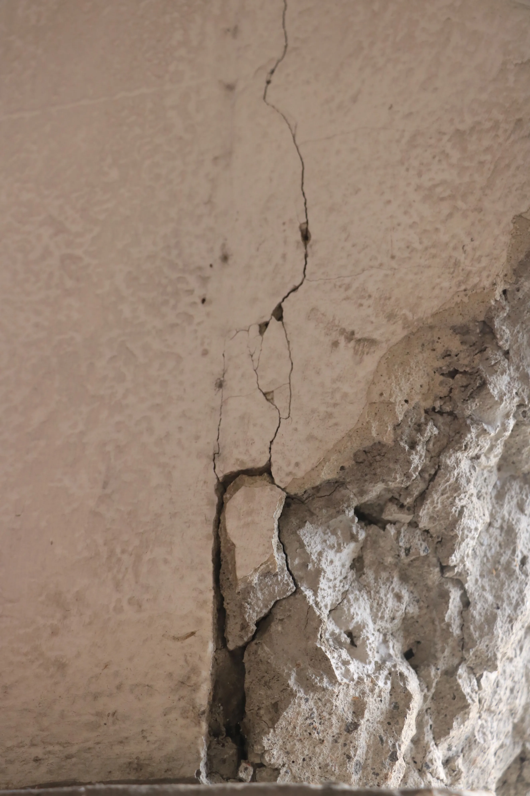

Edificios Dañados a un Año del 19S

“Todo está bien, el edificio no presenta daño estructural”, dijo un alumno a su compañero al ver el letrero en la fachada de su edificio de preparatoria. Un equipo especializado realizó una revisión, algo obligatorio en edificios públicos después de un sismo.
En efecto, al no haber daño estructural, el edificio no caerá. Pero, al contrario de lo que la mayoría cree, esto no es sinónimo de seguridad.
Para empezar tenemos que preguntarnos ¿Qué es un elemento estructural?
Sin importar de qué material esté construido un edificio, si está bien hecho debe tener como soporte los llamados “elementos estructurales” que dicho de otra forma son el “alma” de un edificio. Todos conocemos la clásica imagen del obrero de construcción comiendo su almuerzo sentado en una viga de acero. Esas vigas y columnas de acero son los elementos estructurales que se instalan antes de paredes, techos y pisos. En la famosa serie de Nickelodeon Avatar: The Last Airbender , Sokka planea derribar un taladro militar cortando sus elementos estructurales.

En el caso de la prepa del ejemplo del principio hay que tener en cuenta que la mayor parte del edificio es de concreto y sus elementos estructurales son de concreto u hormigón con refuerzos de acero. Visualmente el concreto y el acero son materiales muy diferentes, inconfundibles y sus propiedades mecánicas también lo son. Mientras que el concreto es duro y rígido, el acero es flexible y elástico (obviamente no tanto como un plástico u otro polímero elástico), esto hace del acero un material increíble que además de soportar cargas muy grandes, es capaz de resistir más que el concreto en caso de sismo. Es por eso que, afortunadamente, los edificios públicos tienen más letreros exponiendo la ausencia de daño estructural, que letreros declarando un edificio inhabitable.
Un edificio sin daño estructural no siempre es un edificio seguro. A veces las autoridades encargadas de autorizar el uso de una edificación consideran que no es necesario tomar medidas correctivas en el inmueble, por lo que las partes de concreto u hormigón (que como sabemos no son muy flexibles) presentan grietas o cuarteaduras que no se reparan, o por lo menos no a corto plazo. Si una pieza de concreto de tamaño considerable se desprende, se convierte en un proyectil, o bien, en un hueco en el techo o piso que compromete la seguridad de sus habitantes.
Si eres encargado de la seguridad, de autorización de recursos o algún otro departamento relacionado a trabajos de reconstrucción; asegúrate de construir y mantener un edificio seguro. Los que somos usuarios de alguna edificación aprendamos a observar después de un sismo y no nos dejemos llevar por la sensación de seguridad que brinda el letrero “Este edificio no presenta daño estructural”.
Texto por Abel Salgado Andrade. Actualmente estudiante de Ingeniería mecánica y tutor particular. Miembro de la Sociedad Científica Juvenil. Áreas de interés: tecnología de materiales y análisis de fallas. abelsalgado_andrade@hotmail.com